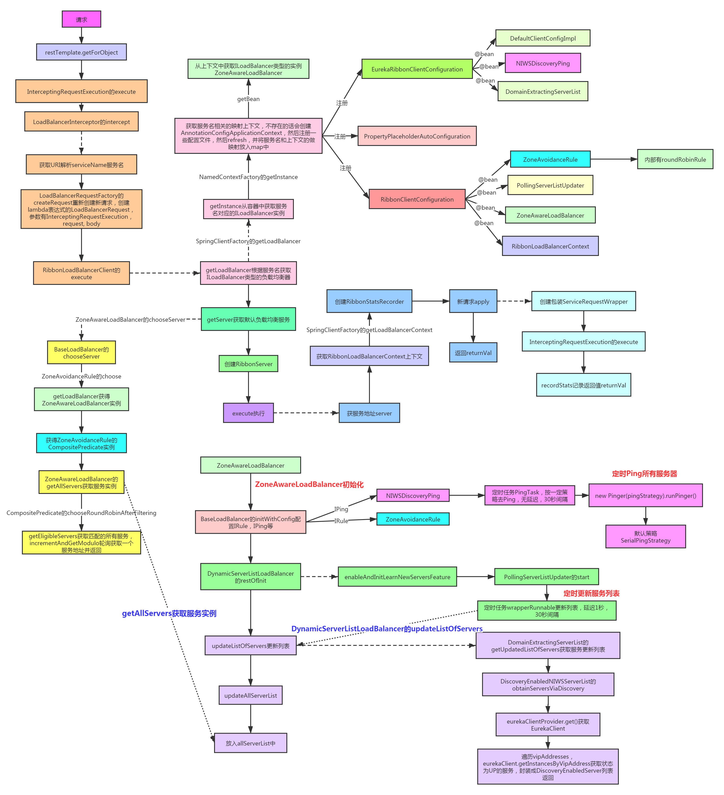
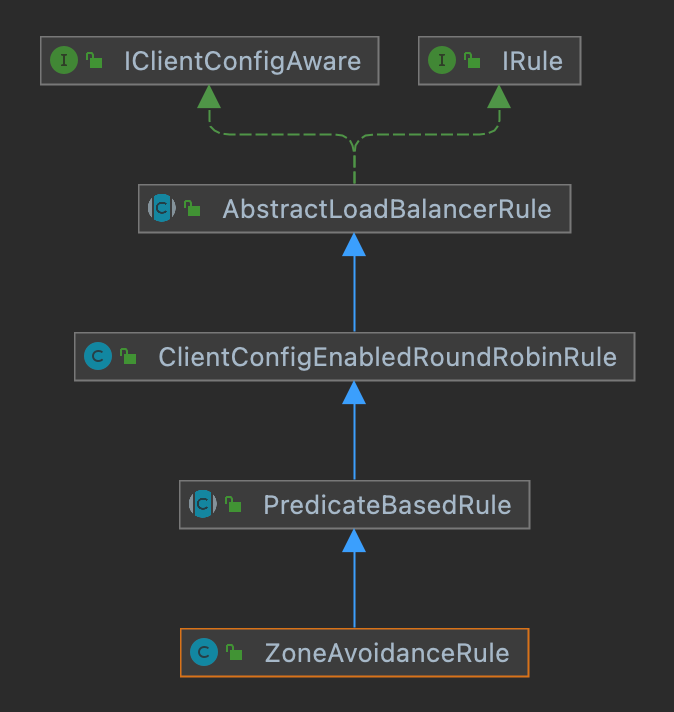
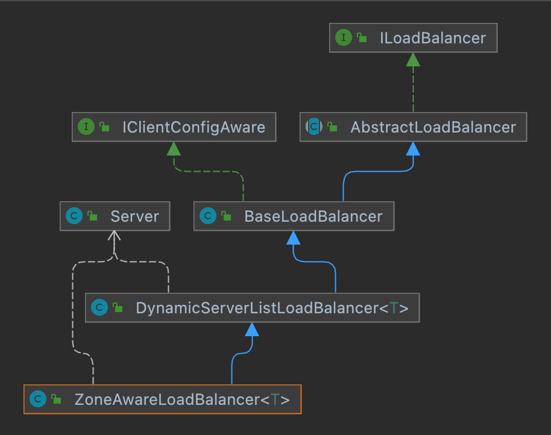

1restTemplate.getForObject("http://utl/xx/xx", String.class);x1private class InterceptingRequestExecution implements ClientHttpRequestExecution {2
3 private final Iterator<ClientHttpRequestInterceptor> iterator;4
5 public InterceptingRequestExecution() {6 this.iterator = interceptors.iterator();7 }8 9 // 执行10 11 public ClientHttpResponse execute(HttpRequest request, byte[] body) throws IOException {12 // 获取拦截器13 if (this.iterator.hasNext()) {14 ClientHttpRequestInterceptor nextInterceptor = this.iterator.next();15 16 // ---看2-2步---17 // 执行拦截器18 return nextInterceptor.intercept(request, body, this);19 // ---end---20 }21 22 23 else {24 HttpMethod method = request.getMethod();25 Assert.state(method != null, "No standard HTTP method");26 ClientHttpRequest delegate = requestFactory.createRequest(request.getURI(), method);27 request.getHeaders().forEach((key, value) -> delegate.getHeaders().addAll(key, value));28 if (body.length > 0) {29 if (delegate instanceof StreamingHttpOutputMessage) {30 StreamingHttpOutputMessage streamingOutputMessage = (StreamingHttpOutputMessage) delegate;31 streamingOutputMessage.setBody(outputStream -> StreamUtils.copy(body, outputStream));32 }33 else {34 StreamUtils.copy(body, delegate.getBody());35 }36 }37 return delegate.execute();38 }39 }40}371public class LoadBalancerInterceptor implements ClientHttpRequestInterceptor {2
3 private LoadBalancerClient loadBalancer;4 private LoadBalancerRequestFactory requestFactory;5
6 public LoadBalancerInterceptor(LoadBalancerClient loadBalancer, LoadBalancerRequestFactory requestFactory) {7 this.loadBalancer = loadBalancer;8 this.requestFactory = requestFactory;9 }10
11 public LoadBalancerInterceptor(LoadBalancerClient loadBalancer) {12 // for backwards compatibility13 this(loadBalancer, new LoadBalancerRequestFactory(loadBalancer));14 }15
16 // 执行拦截器17 18 public ClientHttpResponse intercept(final HttpRequest request, final byte[] body,19 final ClientHttpRequestExecution execution) throws IOException {20 21 // 获取到接口的url22 final URI originalUri = request.getURI();23 24 // 获取到serviceName25 String serviceName = originalUri.getHost();26 Assert.state(serviceName != null, "Request URI does not contain a valid hostname: " + originalUri);27 28 29 // 负载均衡执行 // ---看2-2.2步---30 return this.loadBalancer.execute(serviceName, 31 // ---end--- 32 // ---看2-2.1步---33 requestFactory.createRequest(request, body, execution)34 // ---end---35 );36 }37} 是一个lambda表达式，最终还是被调用，最后还是用ClientHttpRequestExecution去执行，但是请求是包装过的ServiceRequestWrapper实例：
151public LoadBalancerRequest<ClientHttpResponse> createRequest(final HttpRequest request,2 final byte[] body, final ClientHttpRequestExecution execution) {3 4 return instance -> {5 HttpRequest serviceRequest = new ServiceRequestWrapper(request, instance, loadBalancer);6 if (transformers != null) {7 for (LoadBalancerRequestTransformer transformer : transformers) {8 serviceRequest = transformer.transformRequest(serviceRequest, instance);9 }10 }11 12 // ClientHttpRequestExecution执行13 return execution.execute(serviceRequest, body);14 };15} 这里前面是serviceName服务名，里面变成了serviceId了，最后到这里，先获取负载均衡器，然后选择一个要请求的服务器，封装成RibbonServer，最后调用执行：
221public <T> T execute(String serviceId, LoadBalancerRequest<T> request, Object hint) throws IOException {2 3 // ---看2-2.2.1步---4 // 获取负载均衡器5 ILoadBalancer loadBalancer = getLoadBalancer(serviceId);6 // ---end---7 8 // ---看第三步---9 Server server = getServer(loadBalancer, hint);10 // ---end---11 if (server == null) {12 throw new IllegalStateException("No instances available for " + serviceId);13 }14
15 RibbonServer ribbonServer = new RibbonServer(serviceId, server, isSecure(server,16 serviceId), serverIntrospector(serviceId).getMetadata(server));17 18 // ---看第四步---19 // 执行20 return execute(serviceId, ribbonServer, request);21 // ---end---22}获取到负载均衡器
41protected ILoadBalancer getLoadBalancer(String serviceId) {2 // 往下看3 return this.clientFactory.getLoadBalancer(serviceId);4}获取实例：最终调用getInstance。
141public <C> C getInstance(String name, Class<C> type) {2 // ---往下看---3 // 调用父类实例 4 C instance = super.getInstance(name, type);5 // ---end---6 7 if (instance != null) {8 return instance;9 }10 11 // 配置12 IClientConfig config = getInstance(name, IClientConfig.class);13 return instantiateWithConfig(getContext(name), type, config);14}NamedContextFactory#getInstance：最后要得到一个AnnotationConfigApplicationContext，然后去里面拿。
101public <T> T getInstance(String name, Class<T> type) {2 3 // ---往下看---4 // 获取到注解上下文5 AnnotationConfigApplicationContext context = this.getContext(name);6 // ---end---7 8 // 获取beanName9 return BeanFactoryUtils.beanNamesForTypeIncludingAncestors(context, type).length > 0 ? context.getBean(type) : null;10}this.getContext(name); 获取到上下文。
151protected AnnotationConfigApplicationContext getContext(String name) {2 if (!this.contexts.containsKey(name)) {3 synchronized(this.contexts) {4 if (!this.contexts.containsKey(name)) {5 6 // ---往下看--- createContext7 // 不存在创建上下文8 this.contexts.put(name, this.createContext(name));9 // ---end---10 }11 }12 }13
14 return (AnnotationConfigApplicationContext)this.contexts.get(name);15}this.createContext：就是注解的上下文创建，然后注册一些配置类RibbonClientConfiguration和EurekaRibbonClientConfiguration，然后刷新返回。所以这里比较迷惑的地方就是你找不到这两个类在自动配置的时候注册，居然是在这里，藏的好深啊。
421protected AnnotationConfigApplicationContext createContext(String name) {2 AnnotationConfigApplicationContext context = new AnnotationConfigApplicationContext();3 if (this.configurations.containsKey(name)) {4 for (Class<?> configuration : this.configurations.get(name)5 .getConfiguration()) {6 context.register(configuration);7 }8 }9 10 //会注册EurekaRibbonClientConfiguration11 for (Map.Entry<String, C> entry : this.configurations.entrySet()) {12 if (entry.getKey().startsWith("default.")) {13 for (Class<?> configuration : entry.getValue().getConfiguration()) {14 context.register(configuration);15 }16 }17 }18 19 // 这里要注意this.defaultConfigType 其实是 SpringClientFactory 构造函数放入20 // 的RibbonClientConfiguration，这个比较隐蔽，居然不是自动配置的时候注册进来的。21 context.register(PropertyPlaceholderAutoConfiguration.class,22 23 // ---往下看--- 24 this.defaultConfigType);//注册RibbonClientConfiguration25 // ---end---26 27 context.getEnvironment().getPropertySources().addFirst(new MapPropertySource(28 this.propertySourceName,29 Collections.<String, Object>singletonMap(this.propertyName, name)));30 31 if (this.parent != null) {32 // Uses Environment from parent as well as beans33 context.setParent(this.parent);34 35 // jdk11 issue36 // https://github.com/spring-cloud/spring-cloud-netflix/issues/310137 context.setClassLoader(this.parent.getClassLoader());38 }39 context.setDisplayName(generateDisplayName(name));40 context.refresh();41 return context;42}this.defaultConfigType：注入RibbonClientConfiguration。
41public SpringClientFactory() {2 // 注入RibbonClientConfiguration配置类信息3 super(RibbonClientConfiguration.class, NAMESPACE, "ribbon.client.name");4}1601//Order is important here, last should be the default, first should be optional4// see https://github.com/spring-cloud/spring-cloud-netflix/issues/2086#issuecomment-3162816535({HttpClientConfiguration.class, OkHttpRibbonConfiguration.class, RestClientRibbonConfiguration.class, HttpClientRibbonConfiguration.class})6public class RibbonClientConfiguration {7
8 public static final int DEFAULT_CONNECT_TIMEOUT = 1000;9 public static final int DEFAULT_READ_TIMEOUT = 1000;10 public static final boolean DEFAULT_GZIP_PAYLOAD = true;11
12 13 private String name = "client";14
15 // TODO: maybe re-instate autowired load balancers: identified by name they could be16 // associated with ribbon clients17
18 19 private PropertiesFactory propertiesFactory;20 21 // 配置信息：注入IClientConfig配置信息。22 23 24 public IClientConfig ribbonClientConfig() {25 DefaultClientConfigImpl config = new DefaultClientConfigImpl();26 config.loadProperties(this.name);27 config.set(CommonClientConfigKey.ConnectTimeout, DEFAULT_CONNECT_TIMEOUT);28 config.set(CommonClientConfigKey.ReadTimeout, DEFAULT_READ_TIMEOUT);29 config.set(CommonClientConfigKey.GZipPayload, DEFAULT_GZIP_PAYLOAD);30 return config;31 }32
33 //负载均衡的策略：其实等于是一个轮询，只是加了一些过滤器，34 // 根据一些条件过滤服务器，里面默认是轮询RoundRobinRule。35 36 37 public IRule ribbonRule(IClientConfig config) {38 if (this.propertiesFactory.isSet(IRule.class, name)) {39 return this.propertiesFactory.get(IRule.class, config, name);40 }41 42 // ---看2-3.1步---43 // 规则信息44 ZoneAvoidanceRule rule = new ZoneAvoidanceRule();45 // ---end---46 rule.initWithNiwsConfig(config);47 return rule;48 }49
50 51 52 public IPing ribbonPing(IClientConfig config) {53 if (this.propertiesFactory.isSet(IPing.class, name)) {54 return this.propertiesFactory.get(IPing.class, config, name);55 }56 return new DummyPing();57 }58
59 // 服务列表更新器：内部有定时器定时更新服务列表。60 61 62 ("unchecked")63 public ServerList<Server> ribbonServerList(IClientConfig config) {64 if (this.propertiesFactory.isSet(ServerList.class, name)) {65 return this.propertiesFactory.get(ServerList.class, config, name);66 }67 ConfigurationBasedServerList serverList = new ConfigurationBasedServerList();68 serverList.initWithNiwsConfig(config);69 return serverList;70 }71
72 73 74 public ServerListUpdater ribbonServerListUpdater(IClientConfig config) {75 return new PollingServerListUpdater(config);76 }77
78 // 负载均衡器：把配置，策略，`Ping`，服务更新器都整合起来了。79 80 81 public ILoadBalancer ribbonLoadBalancer(IClientConfig config,82 ServerList<Server> serverList, ServerListFilter<Server> serverListFilter,83 IRule rule, IPing ping, ServerListUpdater serverListUpdater) {84 if (this.propertiesFactory.isSet(ILoadBalancer.class, name)) {85 return this.propertiesFactory.get(ILoadBalancer.class, config, name);86 }87 88 // ---看2-3.2步---89 // 创建balance90 return new ZoneAwareLoadBalancer<>(config, rule, ping, serverList,91 serverListFilter, serverListUpdater);92 // ---end---93 }94
95 96 97 ("unchecked")98 public ServerListFilter<Server> ribbonServerListFilter(IClientConfig config) {99 if (this.propertiesFactory.isSet(ServerListFilter.class, name)) {100 return this.propertiesFactory.get(ServerListFilter.class, config, name);101 }102 ZonePreferenceServerListFilter filter = new ZonePreferenceServerListFilter();103 filter.initWithNiwsConfig(config);104 return filter;105 }106
107 108 109 public RibbonLoadBalancerContext ribbonLoadBalancerContext(ILoadBalancer loadBalancer,110 IClientConfig config, RetryHandler retryHandler) {111 return new RibbonLoadBalancerContext(loadBalancer, config, retryHandler);112 }113
114 115 116 public RetryHandler retryHandler(IClientConfig config) {117 return new DefaultLoadBalancerRetryHandler(config);118 }119
120 121 122 public ServerIntrospector serverIntrospector() {123 return new DefaultServerIntrospector();124 }125
126 127 public void preprocess() {128 setRibbonProperty(name, DeploymentContextBasedVipAddresses.key(), name);129 }130
131 static class OverrideRestClient extends RestClient {132
133 private IClientConfig config;134 private ServerIntrospector serverIntrospector;135
136 protected OverrideRestClient(IClientConfig config,137 ServerIntrospector serverIntrospector) {138 super();139 this.config = config;140 this.serverIntrospector = serverIntrospector;141 initWithNiwsConfig(this.config);142 }143
144 145 public URI reconstructURIWithServer(Server server, URI original) {146 URI uri = updateToSecureConnectionIfNeeded(original, this.config,147 this.serverIntrospector, server);148 return super.reconstructURIWithServer(server, uri);149 }150
151 152 protected Client apacheHttpClientSpecificInitialization() {153 ApacheHttpClient4 apache = (ApacheHttpClient4) super.apacheHttpClientSpecificInitialization();154 apache.getClientHandler().getHttpClient().getParams().setParameter(155 ClientPNames.COOKIE_POLICY, CookiePolicy.IGNORE_COOKIES);156 return apache;157 }158
159 }160}ZoneAvoidanceRule：规则信息，可以看下父类，ClientConfigEnabledRoundRobinRule。

51public class ClientConfigEnabledRoundRobinRule extends AbstractLoadBalancerRule {2 // 负载均衡3 RoundRobinRule roundRobinRule = new RoundRobinRule();4 ....5}ZoneAwareLoadBalancer：创建了负载均衡器。看下父类的构造器。

371// ZoneAwareLoadBalancer构造器2public ZoneAwareLoadBalancer(IClientConfig clientConfig, IRule rule,3 IPing ping, ServerList<T> serverList, ServerListFilter<T> filter,4 ServerListUpdater serverListUpdater) {5 // 调用父类 DynamicServerListLoadBalancer 的构造器6 super(clientConfig, rule, ping, serverList, filter, serverListUpdater);7}8
9// 父类构造器，DynamicServerListLoadBalancer 构造器10public DynamicServerListLoadBalancer(IClientConfig clientConfig, IRule rule, IPing ping,11 ServerList<T> serverList, ServerListFilter<T> filter,12 ServerListUpdater serverListUpdater) {13 // 继续调用父类 BaseLoadBalancer 的方法 14 super(clientConfig, rule, ping);15 16 // 属性17 this.serverListImpl = serverList;18 this.filter = filter;19 this.serverListUpdater = serverListUpdater;20 if (filter instanceof AbstractServerListFilter) {21 ((AbstractServerListFilter) filter).setLoadBalancerStats(getLoadBalancerStats());22 }23 24 // ---看2-3.2.2步---25 // 开启服务列表更新的定时任务。26 restOfInit(clientConfig);27 // ---end---28}29
30// 父类构造器31// BaseLoadBalancer 构造器32public BaseLoadBalancer(IClientConfig config, IRule rule, IPing ping) {33 // ---看2-3.2.1步---34 // 调用初始化配置信息35 initWithConfig(config, rule, ping, createLoadBalancerStatsFromConfig(config));36 // ---end---37}调用初始化配置信息：初始化配置信息。
471// 调用初始化配置信息2void initWithConfig(IClientConfig clientConfig, IRule rule, IPing ping, LoadBalancerStats stats) {3 this.config = clientConfig;4 String clientName = clientConfig.getClientName();5 this.name = clientName;6 int pingIntervalTime = Integer.parseInt(""7 + clientConfig.getProperty(8 CommonClientConfigKey.NFLoadBalancerPingInterval,9 Integer.parseInt("30")));10 int maxTotalPingTime = Integer.parseInt(""11 + clientConfig.getProperty(12 CommonClientConfigKey.NFLoadBalancerMaxTotalPingTime,13 Integer.parseInt("2")));14
15 setPingInterval(pingIntervalTime);16 setMaxTotalPingTime(maxTotalPingTime);17 18 // ---往下看---19 // 设置规则和ping20 // cross associate with each other21 // i.e. Rule,Ping meet your container LB22 // LB, these are your Ping and Rule guys ...23 setRule(rule);24 // ---end---25 26 // ---往下看---27 setPing(ping);28 // ---end---29
30 setLoadBalancerStats(stats);31 rule.setLoadBalancer(this);32 if (ping instanceof AbstractLoadBalancerPing) {33 ((AbstractLoadBalancerPing) ping).setLoadBalancer(this);34 }35 logger.info("Client: {} instantiated a LoadBalancer: {}", name, this);36 boolean enablePrimeConnections = clientConfig.get(37 CommonClientConfigKey.EnablePrimeConnections, DefaultClientConfigImpl.DEFAULT_ENABLE_PRIME_CONNECTIONS);38
39 if (enablePrimeConnections) {40 this.setEnablePrimingConnections(true);41 PrimeConnections primeConnections = new PrimeConnections(42 this.getName(), clientConfig);43 this.setPrimeConnections(primeConnections);44 }45 init();46
47}setRule：默认RoundRobinRule要被ZoneAvoidanceRule代替。但是ZoneAvoidanceRule底层还是RoundRobinRule。
111public void setRule(IRule rule) {2 if (rule != null) {3 this.rule = rule;4 } else {5 /* default rule */6 this.rule = new RoundRobinRule();7 }8 if (this.rule.getLoadBalancer() != this) {9 this.rule.setLoadBalancer(this);10 }11}setPing：设置了Ping任务对象。
151public void setPing(IPing ping) {2 if (ping != null) {3 if (!ping.equals(this.ping)) {4 this.ping = ping;5 // ---往下看---6 // 开始ping任务7 setupPingTask(); // since ping data changed8 // ---end---9 }10 } else {11 this.ping = null;12 // cancel the timer task13 lbTimer.cancel();14 }15}setupPingTask：无延迟，间隔30秒一次，执行PingTask的run方法。
141void setupPingTask() {2 if (canSkipPing()) {3 return;4 }5 if (lbTimer != null) {6 lbTimer.cancel();7 }8 lbTimer = new ShutdownEnabledTimer("NFLoadBalancer-PingTimer-" + name, true);9 // ---往下看--- 10 // 定时任务 // 看下pingtask11 lbTimer.schedule(new PingTask(), 0, pingIntervalSeconds * 1000);12 // ---end---13 forceQuickPing();14}PingTask：真正ping任务。
91class PingTask extends TimerTask {2 public void run() {3 try { // SerialPingStrategy4 new Pinger(pingStrategy).runPinger();5 } catch (Exception e) {6 logger.error("LoadBalancer [{}]: Error pinging", name, e);7 }8 }9}开启服务列表更新的定时任务。
181void restOfInit(IClientConfig clientConfig) {2 boolean primeConnection = this.isEnablePrimingConnections();3 // turn this off to avoid duplicated asynchronous priming done in BaseLoadBalancer.setServerList()4 this.setEnablePrimingConnections(false);5 6 // ---往下看---7 // 开启更新定时器8 enableAndInitLearnNewServersFeature();9 // ---end---10
11 updateListOfServers();12 if (primeConnection && this.getPrimeConnections() != null) {13 this.getPrimeConnections()14 .primeConnections(getReachableServers());15 }16 this.setEnablePrimingConnections(primeConnection);17 LOGGER.info("DynamicServerListLoadBalancer for client {} initialized: {}", clientConfig.getClientName(), this.toString());18}enableAndInitLearnNewServersFeature：开启定时器。
81public void enableAndInitLearnNewServersFeature() {2 LOGGER.info("Using serverListUpdater {}", serverListUpdater.getClass().getSimpleName());3 4 // ---往下看---5 // 开启定时器，延迟10秒，间隔30秒，然后执行updateListOfServers方法6 serverListUpdater.start(updateAction);7 // ---end---8}PollingServerListUpdater#start：开启定时器，延迟10秒，间隔30秒，然后执行updateListOfServers方法。
351public synchronized void start(final UpdateAction updateAction) {3 if (isActive.compareAndSet(false, true)) {4 final Runnable wrapperRunnable = new Runnable() {5 6 public void run() {7 if (!isActive.get()) {8 if (scheduledFuture != null) {9 scheduledFuture.cancel(true);10 }11 return;12 }13 try {14 15 // ---往下看---16 // 执行更新17 updateAction.doUpdate();18 // ---end---19 lastUpdated = System.currentTimeMillis();20 } catch (Exception e) {21 logger.warn("Failed one update cycle", e);22 }23 }24 };25
26 scheduledFuture = getRefreshExecutor().scheduleWithFixedDelay(27 wrapperRunnable,28 initialDelayMs,29 refreshIntervalMs,30 TimeUnit.MILLISECONDS31 );32 } else {33 logger.info("Already active, no-op");34 }35}doUpdate：服务列表更新。
281protected final ServerListUpdater.UpdateAction updateAction = new ServerListUpdater.UpdateAction() {2 3 public void doUpdate() {4 updateListOfServers();5 }6};7
8public void updateListOfServers() {10 List<T> servers = new ArrayList<T>();11 if (serverListImpl != null) {12 // ---看2-3.2.3步---13 // 获取需要更新的服务列表14 servers = serverListImpl.getUpdatedListOfServers();15 // ---end---16 17 LOGGER.debug("List of Servers for {} obtained from Discovery client: {}",18 getIdentifier(), servers);19
20 if (filter != null) {21 servers = filter.getFilteredListOfServers(servers);22 LOGGER.debug("Filtered List of Servers for {} obtained from Discovery client: {}",23 getIdentifier(), servers);24 }25 }26 // 更新服务列表27 updateAllServerList(servers);28} 最终会调用到，DiscoveryEnabledNIWSServerList的obtainServersViaDiscovery。
最终到这里，其实就是获取EurekaClient，然后调用他的方法获取服务列表，然后封装成DiscoveryEnabledServer对象，放入serverList集合返回。
261private List<DiscoveryEnabledServer> obtainServersViaDiscovery() {2 List<DiscoveryEnabledServer> serverList = new ArrayList<DiscoveryEnabledServer>();3
4 ...5 //获取客户端6 EurekaClient eurekaClient = eurekaClientProvider.get();7 if (vipAddresses!=null){8 for (String vipAddress : vipAddresses.split(",")) {9 // if targetRegion is null, it will be interpreted as the same region of client10 List<InstanceInfo> listOfInstanceInfo = eurekaClient.getInstancesByVipAddress(vipAddress, isSecure, targetRegion);11 for (InstanceInfo ii : listOfInstanceInfo) {12 if (ii.getStatus().equals(InstanceStatus.UP)) {13
14 ...15
16 DiscoveryEnabledServer des = createServer(ii, isSecure, shouldUseIpAddr);17 serverList.add(des);18 }19 }20 if (serverList.size()>0 && prioritizeVipAddressBasedServers){21 break; // if the current vipAddress has servers, we dont use subsequent vipAddress based servers22 }23 }24 }25 return serverList;26 } 最后获取到的集合还要去更新负载均衡器里的集合，也就是BaseLoadBalancer的allServerList，这个就不说了，自己看下好了。
真正的Ping实例：用来获取服务列表。
81public IPing ribbonPing(IClientConfig config) {4 if (this.propertiesFactory.isSet(IPing.class, name)) {5 return this.propertiesFactory.get(IPing.class, config, name);6 }7 return new DummyPing();8}获取Eureka列表：获取Eureka客户端，然后获取服务列表。
111("unchecked")4public ServerList<Server> ribbonServerList(IClientConfig config) {5 if (this.propertiesFactory.isSet(ServerList.class, name)) {6 return this.propertiesFactory.get(ServerList.class, config, name);7 }8 ConfigurationBasedServerList serverList = new ConfigurationBasedServerList();9 serverList.initWithNiwsConfig(config);10 return serverList;11}选取服务器。
101// 获取服务信息2protected Server getServer(ILoadBalancer loadBalancer, Object hint) {3 if (loadBalancer == null) {4 return null;5 }6 7 // 上边初始化：ZoneAwareLoadBalancer8 // Use 'default' on a null hint, or just pass it on?9 return loadBalancer.chooseServer(hint != null ? hint : "default");10}451public Server chooseServer(Object key) {2 // 因为hint是null，所以是默认的选择，调用父类的chooseServer。3 if (!ENABLED.get() || getLoadBalancerStats().getAvailableZones().size() <= 1) {4 logger.debug("Zone aware logic disabled or there is only one zone");5 // ---看3-1.1步---6 // 调用父类的server7 return super.chooseServer(key);8 // ---end---9 }10 11 Server server = null;12 try {13 LoadBalancerStats lbStats = getLoadBalancerStats();14 Map<String, ZoneSnapshot> zoneSnapshot = ZoneAvoidanceRule.createSnapshot(lbStats);15 logger.debug("Zone snapshots: {}", zoneSnapshot);16 if (triggeringLoad == null) {17 triggeringLoad = DynamicPropertyFactory.getInstance().getDoubleProperty(18 "ZoneAwareNIWSDiscoveryLoadBalancer." + this.getName() + ".triggeringLoadPerServerThreshold", 0.2d);19 }20
21 if (triggeringBlackoutPercentage == null) {22 triggeringBlackoutPercentage = DynamicPropertyFactory.getInstance().getDoubleProperty(23 "ZoneAwareNIWSDiscoveryLoadBalancer." + this.getName() + ".avoidZoneWithBlackoutPercetage", 0.99999d);24 }25 Set<String> availableZones = ZoneAvoidanceRule.getAvailableZones(zoneSnapshot, triggeringLoad.get(), triggeringBlackoutPercentage.get());26 logger.debug("Available zones: {}", availableZones);27 if (availableZones != null && availableZones.size() < zoneSnapshot.keySet().size()) {28 String zone = ZoneAvoidanceRule.randomChooseZone(zoneSnapshot, availableZones);29 logger.debug("Zone chosen: {}", zone);30 if (zone != null) {31 BaseLoadBalancer zoneLoadBalancer = getLoadBalancer(zone);32 server = zoneLoadBalancer.chooseServer(key);33 }34 }35 } catch (Exception e) {36 logger.error("Error choosing server using zone aware logic for load balancer={}", name, e);37 }38 if (server != null) {39 return server;40 } else {41 // 选择父类server42 logger.debug("Zone avoidance logic is not invoked.");43 return super.chooseServer(key);44 }45} 内部规则是ZoneAvoidanceRule，就是前面说的把默认的RoundRobinRule给覆盖了，但是复合策略里面默认的又是RoundRobinRule，只是加了一些过滤器，根据一些条件过滤服务器。
211public Server chooseServer(Object key) {2 if (counter == null) {3 counter = createCounter();4 }5 counter.increment();6 if (rule == null) {7 return null;8 } else {9 try {10 11 // ---看3-1.1.1---12 // 调用的 ZoneAvoidanceRule 方法13 return rule.choose(key);14 // ---end---15 16 } catch (Exception e) {17 logger.warn("LoadBalancer [{}]: Error choosing server for key {}", name, key, e);18 return null;19 }20 }21}161public Server choose(Object key) {2 //获取ZoneAwareLoadBalancer3 ILoadBalancer lb = getLoadBalancer();4 5 // ---看3-1.1.2步---6 //过滤出服务7 Optional<Server> server = getPredicate().chooseRoundRobinAfterFiltering(lb.getAllServers(), key);8 // ---end---9 10 //存在就返回11 if (server.isPresent()) {12 return server.get();13 } else {14 return null;15 } 16}必须先走过滤器，过滤一遍，然后再轮询出服务器。
231public Optional<Server> chooseRoundRobinAfterFiltering(List<Server> servers, Object loadBalancerKey) {2 // ---看3-1.1.3步---3 // 获取过滤器4 List<Server> eligible = getEligibleServers(servers, loadBalancerKey);5 // ---end---6 7 if (eligible.size() == 0) {8 return Optional.absent();9 }10 11 // 获取对应的索引 轮询方式12 return Optional.of(eligible.get(incrementAndGetModulo(eligible.size())));13}14
15
16private int incrementAndGetModulo(int modulo) {17 for (;;) {18 int current = nextIndex.get();19 int next = (current + 1) % modulo;20 if (nextIndex.compareAndSet(current, next) && current < modulo)21 return current;22 }23}161public List<Server> getEligibleServers(List<Server> servers, Object loadBalancerKey) {2 if (loadBalancerKey == null) {3 return ImmutableList.copyOf(Iterables.filter(servers, this.getServerOnlyPredicate())); 4 } else {5 List<Server> results = Lists.newArrayList();6 // 进行过滤7 for (Server server: servers) {8 // 内部最终会进行ZoneAvoidancePredicate和AvailabilityPredicate两个过滤器的过滤，9 // 只要有一个不满足就被过滤掉了。10 if (this.apply(new PredicateKey(loadBalancerKey, server))) {11 results.add(server);12 }13 }14 return results; 15 }16}ZoneAvoidancePredicate#apply：区域过滤器，貌似跟亚马逊云有关，我们一般默认就一个区域defaultzone，多个区域就需要有判断了，比如断电情况，负载啊这些，具体可以看ZoneAvoidancePredicate的apply方法，我就不多说了。一般情况只有一个区域，就返回true了。
341public boolean apply( PredicateKey input) {2 if (!ENABLED.get()) {3 return true;4 }5 String serverZone = input.getServer().getZone();6 if (serverZone == null) {7 // there is no zone information from the server, we do not want to filter8 // out this server9 return true;10 }11 LoadBalancerStats lbStats = getLBStats();12 if (lbStats == null) {13 // no stats available, do not filter14 return true;15 }16 // 返回区域<= 117 if (lbStats.getAvailableZones().size() <= 1) {18 // only one zone is available, do not filter19 return true;20 }21 Map<String, ZoneSnapshot> zoneSnapshot = ZoneAvoidanceRule.createSnapshot(lbStats);22 if (!zoneSnapshot.keySet().contains(serverZone)) {23 // The server zone is unknown to the load balancer, do not filter it out 24 return true;25 }26 logger.debug("Zone snapshots: {}", zoneSnapshot);27 Set<String> availableZones = ZoneAvoidanceRule.getAvailableZones(zoneSnapshot, triggeringLoad.get(), triggeringBlackoutPercentage.get());28 logger.debug("Available zones: {}", availableZones);29 if (availableZones != null) {30 return availableZones.contains(input.getServer().getZone());31 } else {32 return false;33 }34} AvailabilityPredicate#apply：可用性过滤器，这个是用来过滤掉不可用的服务器，不如连接不上，还有并发太多的，他就是获取服务器信息，然后判断一些问题。
181public boolean apply( PredicateKey input) {3 LoadBalancerStats stats = getLBStats();4 if (stats == null) {5 return true;6 }7 // 判断是否要跳过8 return !shouldSkipServer(stats.getSingleServerStat(input.getServer()));9}10
11// 如果检测出断路器问题或者是服务器连接数超过限制了，就要过滤掉了。12private boolean shouldSkipServer(ServerStats stats) { 13 if ((CIRCUIT_BREAKER_FILTERING.get() && stats.isCircuitBreakerTripped()) 14 || stats.getActiveRequestsCount() >= activeConnectionsLimit.get()) {15 return true;16 }17 return false;18} 创建RibbonLoadBalancerContext上下文和状态记录器RibbonStatsRecorder做点计时，最后调用最开始封装的新请求的apply方法：
341public <T> T execute(String serviceId, ServiceInstance serviceInstance, LoadBalancerRequest<T> request) throws IOException {2 Server server = null;3 // 获取到服务器4 if(serviceInstance instanceof RibbonServer) {5 server = ((RibbonServer)serviceInstance).getServer();6 }7 if (server == null) {8 throw new IllegalStateException("No instances available for " + serviceId);9 }10 11 // 获取到善变获取到的上下文信息12 RibbonLoadBalancerContext context = this.clientFactory13 .getLoadBalancerContext(serviceId);14 RibbonStatsRecorder statsRecorder = new RibbonStatsRecorder(context, server);15
16 try {17
18 // 真正执行的方法19 T returnVal = request.apply(serviceInstance);20 21 statsRecorder.recordStats(returnVal);22 return returnVal;23 }24 // catch IOException and rethrow so RestTemplate behaves correctly25 catch (IOException ex) {26 statsRecorder.recordStats(ex);27 throw ex;28 }29 catch (Exception ex) {30 statsRecorder.recordStats(ex);31 ReflectionUtils.rethrowRuntimeException(ex);32 }33 return null;34}当然如果你要自定义规则，实现这个接口就好：
31public class MyRule implements IRule{2
3}